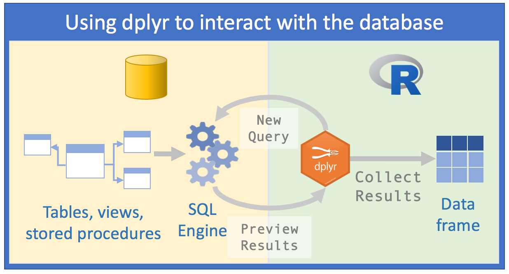
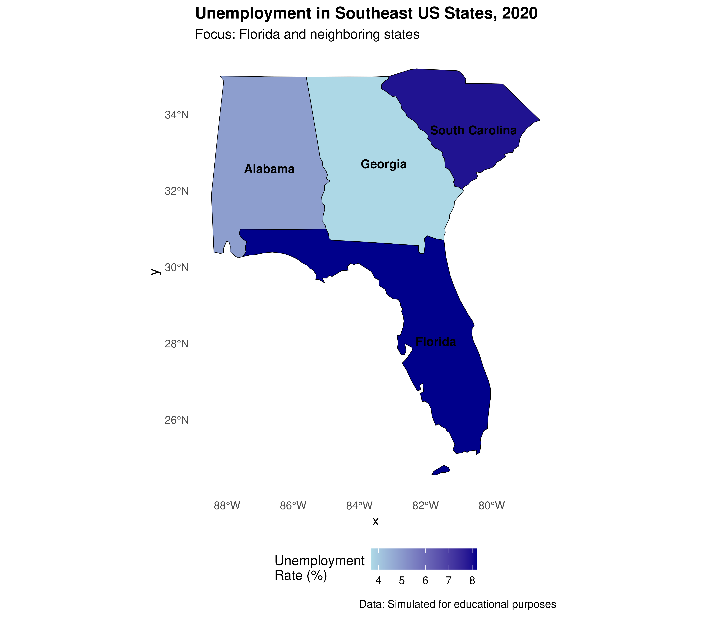

3 Module III
3.1 Accessing Relational Databases with dbplyr
3.1.1 Introduction
The content of this chapter was adapted from the dbplyr vignette and the article Databases using R by Edgar Ruiz, package author and member of RStudio. dbplyr allows combining the easy data manipulation grammar provided by dplyr with access to SQL relational databases without actually needing to use SQL commands.
Using databases is inevitable for those whose work involves data analysis. At this point, as users of the R language, instinct leads us to adopt an approach with databases in the same way we would read a .txt or .csv data file: we would try to read all the data at once or parts of it until forming the entire dataset. The goal would be to “return” to the database as little as possible, so that our queries would extract as much data as possible. After that, we would spend several cycles analyzing that data saved in our computer’s memory. We would follow roughly this scheme:
 Source: Databases using R, Edgar Ruiz
Source: Databases using R, Edgar Ruiz
This approach has some problems:
the volume of data we would have to work with would be very large. Therefore, we would spend some time thinking about how to minimize resource consumption and time to arrive at the subset of data we actually need to work with;
to save resources, we would opt to directly use an external SQL client, work the data as much as possible to then extract what interests us and only then use R;
we would need to know SQL in depth to make as many queries as possible using a “client” of SQL Server for example. We would save different scripts so we could repeat the queries again;
What would be the best approach then?
 Source: Databases using R, Edgar Ruiz
With dbplyr, the task of accessing relational databases would be EXTREMELY optimized, because:
1st) You don’t need to know SQL syntax to access data. Just knowing R and having a slight notion of SQL and you can already make a considerable number of data manipulations;
2nd) You will only need RStudio and no longer an external SQL client to make queries;
3rd) The code you would need in the first approach will be cut in half with the second
4th) Instead of spending hours thinking about which database you really need to import, we can analyze the data within the SQL server;
5th) Instead of using your computer’s memory, you’ll use the SQL server engine, because
dbplyrtogether withdplyrwill send queries to the server;- Manipulating data with R commands (and even more with
dplyr) is much easier than manipulating data with SQL commands. So, you can investigate and manipulate data much more easily just with R to only save the result on your computer at the end
- Manipulating data with R commands (and even more with
Before we start, you need to install and load the following packages: DBI and dbplyr. DBI is a backend that allows dplyr to communicate with various types of SQL databases using the same code. However, when installing and loading dbplyr, the DBI package will also be automatically loaded.
# install.packages("dbplyr")
library(dbplyr)In addition to dbplyr (and DBI), we’ll need a specific backend or driver for the type of SQL server we’re going to access. The most common are:
- RMySQL connects to MySQL and MariaDB;
- RPostgreSQL connects to Postgres and Redshift;
- RSQLite embeds an embedded SQLite database (very useful for training);
- odbc connects to various commercial databases (SQL Server, for example) using the open connectivity protocol;
- bigrquery connects to Google’s BigQuery.
These backends are also implemented as R packages.
For the examples in this handout, we’ll use RSQLite, because we’ll need to emulate a SQL-type database.
3.1.2 Connecting to a database
To be able to work with a database together with dplyr, we must first establish a connection with this database, using DBI::dbConnect(). We thus create a connection object within R that will make the link in our RStudio session and the database.
# install.packages("RSQLite")
library(dplyr)
con <- DBI::dbConnect(drv = RSQLite::SQLite(), path = ":memory:")The drv argument of DBI::dbConnect() can vary from database to database, but the first argument is always the driver of the type of database to which you will connect. It would be RSQLite::SQLite() for SQLite, RMySQL::MySQL() for MySQL, RPostgreSQL::PostgreSQL() for PostgreSQL, odbc::odbc() for SQL Server and bigrquery::bigquery() for Google BigQuery. SQLite only needs one more argument: the path to the database. In our case, we use the special string [:memory:] which will make SQLite build a temporary database in our computer’s memory.
However, most databases don’t “live” in a file, but on a server. This means that in real life your code would be more like:
con <- DBI::dbConnect(RMySQL::MySQL(),
host = "database.company.com",
user = "username",
password = rstudioapi::askForPassword("Database password")
)TIP: In real life, when creating the connection object with the actual relational server, you would see a connections tab in RStudio, with the respective schemas and/or tables present on the server. It’s like a Global Environment of the database:
RStudio Connections Tab
The temporary database we created earlier doesn’t have any data tables yet. Let’s start by copying a sample dataset. We’ll use the mtcars dataset that comes built-in with R, using the copy_to() function. Although this isn’t the most recommended way to put data into a database, it’s quite useful and easy to use in demonstrations:
library(readr)
# Using the built-in mtcars dataset
cars_data <- mtcarsOnce done, we can add the data to our fictional relational database:
copy_to(con, cars_data, "cars_db",
temporary = FALSE,
indexes = list(
"cyl",
"gear"
)
)The copy_to() function has some additional arguments that allow us to provide indexes for the table. We then create indexes that will allow us to quickly process data by cyl and gear. Creating write indexes is a key point for good database performance when sending queries. However, this is beyond the scope of this course.
Once we’ve copied the data to the server, we can reference (we’re not importing yet) this table in R using the tbl() function, which extracts the table called "cars_db" from the database.
cars_db <- tbl(con, "cars_db")If we print the newly created reference, we’ll see it looks like a tibble, although it’s portrayed as a list in the Global Environment.
cars_db ## # Source: table<`cars_db`> [?? x 11]
## # Database: sqlite 3.46.0 []
## mpg cyl disp hp drat wt qsec vs am gear carb
## <dbl> <dbl> <dbl> <dbl> <dbl> <dbl> <dbl> <dbl> <dbl> <dbl> <dbl>
## 1 21 6 160 110 3.9 2.62 16.5 0 1 4 4
## 2 21 6 160 110 3.9 2.88 17.0 0 1 4 4
## 3 22.8 4 108 93 3.85 2.32 18.6 1 1 4 1
## 4 21.4 6 258 110 3.08 3.22 19.4 1 0 3 1
## 5 18.7 8 360 175 3.15 3.44 17.0 0 0 3 2
## 6 18.1 6 225 105 2.76 3.46 20.2 1 0 3 1
## 7 14.3 8 360 245 3.21 3.57 15.8 0 0 3 4
## 8 24.4 4 147. 62 3.69 3.19 20 1 0 4 2
## 9 22.8 4 141. 95 3.92 3.15 22.9 1 0 4 2
## 10 19.2 6 168. 123 3.92 3.44 18.3 1 0 4 4
## # ℹ more rowsThe only difference is the reference that the data is in a SQLite database.
3.1.3 Generating queries
To interact with a database we usually use SQL - Structured Query Language. SQL is over 40 years old and is used in practically all existing databases. The goal of dbplyr is to automatically generate code in SQL so that we’re not forced to use it. However, dbplyr doesn’t do everything that SQL language does. It focuses on the declarative SELECT and derivatives, which we consider sufficient for the scope of this course.
See how, most of the time, we don’t need to know anything about SQL and can continue using the dplyr verbs we’re already familiar with.
cars_db %>% select(mpg, cyl, hp)## # Source: SQL [?? x 3]
## # Database: sqlite 3.46.0 []
## mpg cyl hp
## <dbl> <dbl> <dbl>
## 1 21 6 110
## 2 21 6 110
## 3 22.8 4 93
## 4 21.4 6 110
## 5 18.7 8 175
## 6 18.1 6 105
## 7 14.3 8 245
## 8 24.4 4 62
## 9 22.8 4 95
## 10 19.2 6 123
## # ℹ more rowscars_db %>% filter(mpg > 20)## # Source: SQL [?? x 11]
## # Database: sqlite 3.46.0 []
## mpg cyl disp hp drat wt qsec vs am gear carb
## <dbl> <dbl> <dbl> <dbl> <dbl> <dbl> <dbl> <dbl> <dbl> <dbl> <dbl>
## 1 21 6 160 110 3.9 2.62 16.5 0 1 4 4
## 2 21 6 160 110 3.9 2.88 17.0 0 1 4 4
## 3 22.8 4 108 93 3.85 2.32 18.6 1 1 4 1
## 4 21.4 6 258 110 3.08 3.22 19.4 1 0 3 1
## 5 24.4 4 147. 62 3.69 3.19 20 1 0 4 2
## 6 22.8 4 141. 95 3.92 3.15 22.9 1 0 4 2
## 7 32.4 4 78.7 66 4.08 2.2 19.5 1 1 4 1
## 8 30.4 4 75.7 52 4.93 1.62 18.5 1 1 4 2
## 9 33.9 4 71.1 65 4.22 1.84 19.9 1 1 4 1
## 10 21.5 4 120. 97 3.7 2.46 20.0 1 0 3 1
## # ℹ more rowscars_db %>%
group_by(cyl) %>%
summarise(avg_mpg = mean(mpg, na.rm = TRUE))## # Source: SQL [3 x 2]
## # Database: sqlite 3.46.0 []
## cyl avg_mpg
## <dbl> <dbl>
## 1 4 26.7
## 2 6 19.7
## 3 8 15.1However, in the long run it’s highly recommended that you learn at least the basics of SQL. SQL is a quite important skill for any data scientist or people who deal with data routinely.
The most important difference between ordinary dataframes and queries to remote databases is that our R code is translated to SQL language and executed in the database, not in R. When working with databases, dplyr tries to be as lazy as possible. dplyr relies on a concept widely used in R, which is lazy evaluation:
It never brings data to R unless we explicitly request it to do so;
It “delays” doing any task until the last moment: it collects all commands and sends to the database in a single step.
See the following example:
by_cyl_db <- cars_db %>%
group_by(cyl) %>%
summarise(
avg_mpg = mean(mpg, na.rm=TRUE),
n = n()
) %>%
arrange(desc(avg_mpg)) %>%
filter(n > 5)It’s surprising what we’re going to say now, but all this code doesn’t touch the database at any time; not until we request it, for example by doing a printing of the created object by_cyl_db. Only then does dplyr generate the SQL code and request the results from the database on the SQL server. Still, it tries to minimize what will be printed, bringing only a few lines and not everything. See:
by_cyl_db## # Source: SQL [3 x 3]
## # Database: sqlite 3.46.0 []
## # Ordered by: desc(avg_mpg)
## cyl avg_mpg n
## <dbl> <dbl> <int>
## 1 4 26.7 11
## 2 6 19.7 7
## 3 8 15.1 14Behind the scenes, dbplyr/dplyr is translating the code in R to SQL code. If you want to see (and learn) the SQL code being sent to the server, use show_query():
by_cyl_db %>% show_query()## <SQL>
## SELECT `cyl`, AVG(`mpg`) AS `avg_mpg`, COUNT(*) AS `n`
## FROM `cars_db`
## GROUP BY `cyl`
## HAVING (COUNT(*) > 5.0)
## ORDER BY `avg_mpg` DESCFor those more familiar with SQL, the code above probably wouldn’t be what you would write, but it accomplishes the mission. See vignette("SQL-translation").
Even with dbplyr/dplyr, we’ll still do some iterations and attempts until we discover what we’ll really need from the data. However, we’ll do it much faster. Once we know exactly our goal, we can use collect() to bring all the data into a (local) tibble on our machine:
by_cyl_final <- by_cyl_db %>% collect()
by_cyl_final## # A tibble: 3 × 3
## cyl avg_mpg n
## <dbl> <dbl> <int>
## 1 4 26.7 11
## 2 6 19.7 7
## 3 8 15.1 14collect() requires the database to work and therefore the operation may take some time to complete. On the other hand, dbplyr tries to prevent you from accidentally making computationally expensive queries:
There’s usually no way to determine how many rows a query will return until we actually execute it. Unlike when working with databases on our PC, the
nrow()command always returnsNAwhen firing against relational databases;Since we can’t find the last few rows without executing the query of all data, we can’t use
tail(), which prints the \(n\) last rows of a tibble or dataframe.
nrow(by_cyl_db)## [1] NAtail(by_cyl_db)## Error in `tail()`:
## ! `tail()` is not supported on database backends.3.1.4 Section References
Wickham, H.; Ruiz, E. (2019). dbplyr: A ‘dplyr’ Back End for Databases. R package version 1.4.0. URL https://CRAN.R-project.org/package=dbplyr.
____. (2020). dbplyr vignette: Introduction. URL http://dbplyr.tidyverse.org.
Ruiz, E. (2017). Databases using R. RViews-RStudio. May 05, 2017. Available at: https://rviews.rstudio.com/2017/05/17/databases-using-r/
3.1.5 Exercises
Practice using the database connection skills learned with a local SQLite database. Create your own sample dataset, upload it to the database, and practice writing queries using
dplyrverbs.Explore the SQL code generated by
dbplyrfor different operations. Useshow_query()to see how your R code is translated to SQL.
3.2 Data Manipulation with Two-table verbs - dplyr
Data analysis, most of the time, involves more than one database. In practice, they are databases from different sources that contribute to reaching a final result. Thus, we need flexible tools to combine them. In the dplyr package, there are three families of verbs that work with two tables at once:
- mutating joins, which add new variables to a table from matching rows in another;
- filtering joins, which filter observations from a table if these observations match an observation in another table;
- set operations, which combine observations in datasets if they are elements of the informed set.
These items assume your data is in tidy data format, i.e., rows are observations and columns are variables.
All two-table verbs (or two-table functions) work similarly: the first two arguments are x and y and provide the two tables we want to compare and combine. The output will always be a new table with the same object type as x.
3.2.1 Mutating joins
Mutating joins allow us to combine variables from multiple tables. We’ll use some datasets from the nycflights13 package which includes data from 336,776 flights (tibble flights), weather conditions (tibble weather) and aircraft (tibble planes) that landed and took off from 3 airports (tibble airports) in New York in 2013. The data comes from the US Bureau of Transportation Statistics.
Initially we’ll use the flights dataset. Let’s separate some columns from the original tibble into another. Then we’ll try to join the two based on the airline name.
library("nycflights13")
library(dplyr)
# Drop unimportant variables so it's easier to understand the join results.
flights2 <- flights %>% select(year:day, hour, origin, dest, tailnum, carrier)
flights2 %>%
left_join(airlines)## # A tibble: 336,776 × 9
## year month day hour origin dest tailnum carrier name
## <int> <int> <int> <dbl> <chr> <chr> <chr> <chr> <chr>
## 1 2013 1 1 5 EWR IAH N14228 UA United Air Lines Inc.
## 2 2013 1 1 5 LGA IAH N24211 UA United Air Lines Inc.
## 3 2013 1 1 5 JFK MIA N619AA AA American Airlines Inc.
## 4 2013 1 1 5 JFK BQN N804JB B6 JetBlue Airways
## 5 2013 1 1 6 LGA ATL N668DN DL Delta Air Lines Inc.
## 6 2013 1 1 5 EWR ORD N39463 UA United Air Lines Inc.
## 7 2013 1 1 6 EWR FLL N516JB B6 JetBlue Airways
## 8 2013 1 1 6 LGA IAD N829AS EV ExpressJet Airlines Inc.
## 9 2013 1 1 6 JFK MCO N593JB B6 JetBlue Airways
## 10 2013 1 1 6 LGA ORD N3ALAA AA American Airlines Inc.
## # ℹ 336,766 more rows3.2.1.1 Controlling how tables match in mutating joins
Along with the x and y arguments, each mutating join also receives a by argument which is used as an index to match between tables. There are several ways to specify this argument.
Let’s see examples of how to specify the by parameter, using some tables from nycflights13.
- 1st way)
NULL: the default.dplyrwill use all variables that appear in both tables. We call this a natural join. In the following example, theflightsandweathertables will be “joined” based on common variables:year,month,day,hourandorigin.
flights2 %>% left_join(weather)## Joining with `by = join_by(year, month, day, hour, origin)`## # A tibble: 336,776 × 18
## year month day hour origin dest tailnum carrier temp dewp humid wind_dir wind_speed
## <int> <int> <int> <dbl> <chr> <chr> <chr> <chr> <dbl> <dbl> <dbl> <dbl> <dbl>
## 1 2013 1 1 5 EWR IAH N14228 UA 39.0 28.0 64.4 260 12.7
## 2 2013 1 1 5 LGA IAH N24211 UA 39.9 25.0 54.8 250 15.0
## 3 2013 1 1 5 JFK MIA N619AA AA 39.0 27.0 61.6 260 15.0
## 4 2013 1 1 5 JFK BQN N804JB B6 39.0 27.0 61.6 260 15.0
## 5 2013 1 1 6 LGA ATL N668DN DL 39.9 25.0 54.8 260 16.1
## 6 2013 1 1 5 EWR ORD N39463 UA 39.0 28.0 64.4 260 12.7
## 7 2013 1 1 6 EWR FLL N516JB B6 37.9 28.0 67.2 240 11.5
## 8 2013 1 1 6 LGA IAD N829AS EV 39.9 25.0 54.8 260 16.1
## 9 2013 1 1 6 JFK MCO N593JB B6 37.9 27.0 64.3 260 13.8
## 10 2013 1 1 6 LGA ORD N3ALAA AA 39.9 25.0 54.8 260 16.1
## # ℹ 336,766 more rows
## # ℹ 5 more variables: wind_gust <dbl>, precip <dbl>, pressure <dbl>, visib <dbl>, time_hour <dttm>- 2nd way)
by = "var1"orby = c("var1", "var2", "var3"): a character vector. Operates as if it were a natural join, but uses only some of the common variables. For example,flightsandplaneshave ayearvariable, but they mean different things in each tibble/dataframe. So, we want to specify a column we know means the same thing in both tibbles and can serve as an index for matching. Let’s usetailnumwhich is the plane’s (tail) number.
flights2 %>% left_join(planes, by = "tailnum")## # A tibble: 336,776 × 16
## year.x month day hour origin dest tailnum carrier year.y type manufacturer model engines seats
## <int> <int> <int> <dbl> <chr> <chr> <chr> <chr> <int> <chr> <chr> <chr> <int> <int>
## 1 2013 1 1 5 EWR IAH N14228 UA 1999 Fixe… BOEING 737-… 2 149
## 2 2013 1 1 5 LGA IAH N24211 UA 1998 Fixe… BOEING 737-… 2 149
## 3 2013 1 1 5 JFK MIA N619AA AA 1990 Fixe… BOEING 757-… 2 178
## 4 2013 1 1 5 JFK BQN N804JB B6 2012 Fixe… AIRBUS A320… 2 200
## 5 2013 1 1 6 LGA ATL N668DN DL 1991 Fixe… BOEING 757-… 2 178
## 6 2013 1 1 5 EWR ORD N39463 UA 2012 Fixe… BOEING 737-… 2 191
## 7 2013 1 1 6 EWR FLL N516JB B6 2000 Fixe… AIRBUS INDU… A320… 2 200
## 8 2013 1 1 6 LGA IAD N829AS EV 1998 Fixe… CANADAIR CL-6… 2 55
## 9 2013 1 1 6 JFK MCO N593JB B6 2004 Fixe… AIRBUS A320… 2 200
## 10 2013 1 1 6 LGA ORD N3ALAA AA NA <NA> <NA> <NA> NA NA
## # ℹ 336,766 more rows
## # ℹ 2 more variables: speed <int>, engine <chr>Note that when joining all columns from both tibbles, dplyr adds a suffix to the second year variable.
- 3rd way)
by = c("var1" = "var3"): a named character vector. This will match variablevar1in tablexwith variablevar3in tabley. Variables from source tablexwill be used in the output.
Each flight has an origin and destination airport. So we need to specify which of these variables from the flights dataset we want to match with the faa column from the airports dataset.
flights2 %>% left_join(airports, c("dest" = "faa"))## # A tibble: 336,776 × 15
## year month day hour origin dest tailnum carrier name lat lon alt tz dst tzone
## <int> <int> <int> <dbl> <chr> <chr> <chr> <chr> <chr> <dbl> <dbl> <dbl> <dbl> <chr> <chr>
## 1 2013 1 1 5 EWR IAH N14228 UA George Bu… 30.0 -95.3 97 -6 A Amer…
## 2 2013 1 1 5 LGA IAH N24211 UA George Bu… 30.0 -95.3 97 -6 A Amer…
## 3 2013 1 1 5 JFK MIA N619AA AA Miami Intl 25.8 -80.3 8 -5 A Amer…
## 4 2013 1 1 5 JFK BQN N804JB B6 <NA> NA NA NA NA <NA> <NA>
## 5 2013 1 1 6 LGA ATL N668DN DL Hartsfiel… 33.6 -84.4 1026 -5 A Amer…
## 6 2013 1 1 5 EWR ORD N39463 UA Chicago O… 42.0 -87.9 668 -6 A Amer…
## 7 2013 1 1 6 EWR FLL N516JB B6 Fort Laud… 26.1 -80.2 9 -5 A Amer…
## 8 2013 1 1 6 LGA IAD N829AS EV Washingto… 38.9 -77.5 313 -5 A Amer…
## 9 2013 1 1 6 JFK MCO N593JB B6 Orlando I… 28.4 -81.3 96 -5 A Amer…
## 10 2013 1 1 6 LGA ORD N3ALAA AA Chicago O… 42.0 -87.9 668 -6 A Amer…
## # ℹ 336,766 more rowsflights2 %>% left_join(airports, c("origin" = "faa"))## # A tibble: 336,776 × 15
## year month day hour origin dest tailnum carrier name lat lon alt tz dst tzone
## <int> <int> <int> <dbl> <chr> <chr> <chr> <chr> <chr> <dbl> <dbl> <dbl> <dbl> <chr> <chr>
## 1 2013 1 1 5 EWR IAH N14228 UA Newark Li… 40.7 -74.2 18 -5 A Amer…
## 2 2013 1 1 5 LGA IAH N24211 UA La Guardia 40.8 -73.9 22 -5 A Amer…
## 3 2013 1 1 5 JFK MIA N619AA AA John F Ke… 40.6 -73.8 13 -5 A Amer…
## 4 2013 1 1 5 JFK BQN N804JB B6 John F Ke… 40.6 -73.8 13 -5 A Amer…
## 5 2013 1 1 6 LGA ATL N668DN DL La Guardia 40.8 -73.9 22 -5 A Amer…
## 6 2013 1 1 5 EWR ORD N39463 UA Newark Li… 40.7 -74.2 18 -5 A Amer…
## 7 2013 1 1 6 EWR FLL N516JB B6 Newark Li… 40.7 -74.2 18 -5 A Amer…
## 8 2013 1 1 6 LGA IAD N829AS EV La Guardia 40.8 -73.9 22 -5 A Amer…
## 9 2013 1 1 6 JFK MCO N593JB B6 John F Ke… 40.6 -73.8 13 -5 A Amer…
## 10 2013 1 1 6 LGA ORD N3ALAA AA La Guardia 40.8 -73.9 22 -5 A Amer…
## # ℹ 336,766 more rows3.2.1.2 Types of mutating joins
There are 4 types of mutating join, which differ by behavior in rows where no matching occurs between databases.
Let’s create two dataframes and then we’ll see examples of each case.
(df1 <- data.frame(x = c(1, 2), y = 2:1))## x y
## 1 1 2
## 2 2 1(df2 <- data.frame(x = c(1, 3), a = 10, b = "a"))## x a b
## 1 1 10 a
## 2 3 10 ainner_join(x, y): includes only observations that have correspondence in bothxandy(i.e., equal rows in dataframes).
df1 %>% inner_join(df2)## Joining with `by = join_by(x)`## x y a b
## 1 1 2 10 aNote that the by argument was omitted. Thus, the function’s behavior was the default. Column x was used as an index to join the two data frames. Equal rows for variable x in both dataframes are brought in full (i.e., all columns are presented).
left_join(x, y): includes all observations inx, regardless of whether there’s matching between tables. This is the most used type of join, because it guarantees we won’t lose any information from our primary tablex.
df1 %>% left_join(df2)## Joining with `by = join_by(x)`## x y a b
## 1 1 2 10 a
## 2 2 1 NA <NA>right_join(x, y): includes all observations from tabley. It’s equivalent toleft_join(**y**, **x**), but variable ordering will be different in the latter case:
df1 %>% right_join(df2)## Joining with `by = join_by(x)`## x y a b
## 1 1 2 10 a
## 2 3 NA 10 adf2 %>% left_join(df1)## Joining with `by = join_by(x)`## x a b y
## 1 1 10 a 2
## 2 3 10 a NAfull_join(): includes all observations from tablexandy:
df1 %>% full_join(df2)## Joining with `by = join_by(x)`## x y a b
## 1 1 2 10 a
## 2 2 1 NA <NA>
## 3 3 NA 10 aThe left, right and full joins are collectively known as outer joins. When a row from one table has no correspondence in the other table, in an outer join, new variables are filled with missing values (NA).
Although mutating joins exist to add new variables, in some cases they can generate new observations. If a match isn’t unique, a join will add rows for all possible combinations (Cartesian product) of matching observations. This is an important observation, because often when performing a join between two tables, we don’t understand why the table resulting from the join has more observations than the two original tables.
df1 <- data.frame(x = c(1, 1, 2), y = 1:3)
df2 <- data.frame(x = c(1, 1, 2), z = c("a", "b", "a"))
df1 %>% left_join(df2)## Joining with `by = join_by(x)`## Warning in left_join(., df2): Detected an unexpected many-to-many relationship between `x` and `y`.
## ℹ Row 1 of `x` matches multiple rows in `y`.
## ℹ Row 1 of `y` matches multiple rows in `x`.
## ℹ If a many-to-many relationship is expected, set `relationship = "many-to-many"` to silence this
## warning.## x y z
## 1 1 1 a
## 2 1 1 b
## 3 1 2 a
## 4 1 2 b
## 5 2 3 a3.2.2 Filtering joins
Filtering joins “match” observations in the same way as mutating joins, but affect observations themselves and not variables. There are two types of filtering joins:
semi_join()KEEPS all observations inxthat have correspondence iny;anti_join()REMOVES all observations inxthat have correspondence iny.
These joins are very useful for identifying “mismatches” between tables. For example, there are several flights in the flights dataset that don’t have matches regarding tailnum in the planes dataset:
flights %>%
anti_join(planes, by = "tailnum") %>%
count(tailnum, sort = TRUE)## # A tibble: 722 × 2
## tailnum n
## <chr> <int>
## 1 <NA> 2512
## 2 N725MQ 575
## 3 N722MQ 513
## 4 N723MQ 507
## 5 N713MQ 483
## 6 N735MQ 396
## 7 N0EGMQ 371
## 8 N534MQ 364
## 9 N542MQ 363
## 10 N531MQ 349
## # ℹ 712 more rowsIf you’re concerned about which observations our join will match, it’s suggested to start with a semi_join() or anti_join() for the following reason: these joins never duplicate observations, they only remove or keep them in the same number.
df1 <- data.frame(x = c(1, 1, 3, 4), y = 1:4)
df2 <- data.frame(x = c(1, 1, 2), z = c("a", "b", "a"))
# Four rows to start with:
df1 %>% nrow()## [1] 4# And we get four rows after the join
df1 %>% inner_join(df2, by = "x") %>% nrow()## Warning in inner_join(., df2, by = "x"): Detected an unexpected many-to-many relationship between `x` and `y`.
## ℹ Row 1 of `x` matches multiple rows in `y`.
## ℹ Row 1 of `y` matches multiple rows in `x`.
## ℹ If a many-to-many relationship is expected, set `relationship = "many-to-many"` to silence this
## warning.## [1] 4# But only two rows actually match
df1 %>% semi_join(df2, by = "x") %>% nrow()## [1] 2Finally, it’s worth mentioning functions that would be useful if you had to work with 3 or more tables. Read about purrr::reduce() or Reduce(), as described in “Advanced R”, to iteratively combine and expand your knowledge of two-table verbs to handle a larger number of tables.
The content of this chapter was adapted from the two-table verbs vignette, available at http://dplyr.tidyverse.org/articles/two-table.html.
3.2.3 Section References
Wickham H.; François, R.; Henry, L.; Müller K. (2019). dplyr: A Grammar of Data Manipulation. R package version 0.8.1. URL https://CRAN.R-project.org/package=dplyr.
Wickham H.; François, R.; Henry, L.; Müller K. (2020). dplyr vignette: Two-table. Article. Available at: http://dplyr.tidyverse.org/articles/two-table.html.
Wickham, H.; Grolemund, G. (2016). R for Data Science: Import, Tidy, Transform, Visualize, and Model Data. O’Reilly Media. december 2016. 522 pages. Available at: https://www.r4ds.co.nz.
3.2.4 Exercises
Try to replicate each of the joins presented in this section using the
nycflights13datasets. Practice joiningflightswith different tables likeairports,airlines,weather, andplanes.Create your own small datasets and practice all four types of joins (
inner_join,left_join,right_join,full_join). Pay attention to how each handles non-matching rows.Use
anti_join()to find flights in theflightsdataset that don’t have weather information in theweatherdataset.
3.3 Geographic Data Analysis in R
3.3.1 Introduction
In recent decades there has been a real revolution in geocomputation techniques. Thanks to this great advance, geographic data analysis is no longer restricted to those who have access to expensive hardware and software. In a way, we can say that R also contributed to this advance. Although the language had some limitations regarding geocomputation in the early years of language development, recently several R packages have taken geocomputation to a new level, especially regarding reproducibility.
While software based on Geographic Information Systems (GIS), which has Geography as its base discipline and focus on graphical interfaces, leaves something to be desired in the reproducibility of generated maps, R, which is based on Statistics and Computing through command line and programming, makes geographic data analysis much more fluid and capable of reproduction by other users and developers.
In this section, we’ll present some of the main packages and techniques used for map production using R.
3.3.1.1 Geographic data models: vector vs raster
In the field of geocomputation, we need to know how to differentiate the two main types of geographic data: vector and raster.
Geographic data in vector form uses points, lines and polygons to represent a map. In this case, object edges (e.g. States, Municipalities, Countries) are well defined.

Figure 3.1: Example of vector plot
Data in raster format divides a map’s surface into cells of constant sizes. Datasets in raster format are commonly used to generate maps as background images (background). Raster models have been used practically since the origin of Remote Sensing devices and satellites.
In this course, we’ll focus on geographic data models in vector, which is the predominant data model in Social Sciences. This is because spatial arrangements produced by humans tend to have discrete and well-defined boundaries. The raster model is more used in environmental or earth sciences due to the use of data from remote sensing.
Now that we know the conceptual differences between the main geographic data models, let’s get practical.
3.3.2 Map Production in R
3.3.2.1 Shapefiles
Shapefiles are files that follow the geographic data model in vector, containing graphic elements in the format of point, line and/or polygons that can be worked together with geographic coordinates to describe a specific phenomenon, such as population size, disease incidence, unemployment rates, etc. From this information, it’s possible to construct a map.
A shapefile normally contains three main files .shp, .shx, .dbf. There are several places from which you can obtain shapefiles for map making.
If your goal is to obtain shapefiles for US territorial boundaries, you can get them from these sources:
US Census Bureau - TIGER/Line Shapefiles: https://www.census.gov/geographies/mapping-files/time-series/geo/tiger-line-file.html
Natural Earth Data: https://www.naturalearthdata.com/downloads/
TIP: The spData package already includes geographic data for US states, which makes our work easier for educational purposes.
We’ll focus on demonstrating how to work with shapefiles using the spData package that already has ready-made data. For any other data source, procedures will be practically the same.
3.3.2.2 Map of US States
3.3.2.2.1 Obtaining and reading the file
Let’s use the spData package which already contains the territorial mesh of US states. We’ll also need the sf package to work with spatial data.
# Loading necessary packages
library(sf)
library(spData)
library(dplyr)
library(ggplot2)
# Loading US states data
data("us_states")
# Converting to sf object (simple features)
shp_us_states <- st_as_sf(us_states)
# Viewing the data structure
head(shp_us_states)## Simple feature collection with 6 features and 6 fields
## Geometry type: MULTIPOLYGON
## Dimension: XY
## Bounding box: xmin: -114.8136 ymin: 24.55868 xmax: -71.78699 ymax: 42.04964
## Geodetic CRS: NAD83
## GEOID NAME REGION AREA total_pop_10 total_pop_15
## 1 01 Alabama South 133709.27 [km^2] 4712651 4830620
## 2 04 Arizona West 295281.25 [km^2] 6246816 6641928
## 3 08 Colorado West 269573.06 [km^2] 4887061 5278906
## 4 09 Connecticut Norteast 12976.59 [km^2] 3545837 3593222
## 5 12 Florida South 151052.01 [km^2] 18511620 19645772
## 6 13 Georgia South 152725.21 [km^2] 9468815 10006693
## geometry
## 1 MULTIPOLYGON (((-88.20006 3...
## 2 MULTIPOLYGON (((-114.7196 3...
## 3 MULTIPOLYGON (((-109.0501 4...
## 4 MULTIPOLYGON (((-73.48731 4...
## 5 MULTIPOLYGON (((-81.81169 2...
## 6 MULTIPOLYGON (((-85.60516 3...Note that in addition to state names, region they belong to (REGION), area, total population and other variables, this special dataframe has a column called geom. This column has the vector geometric elements for map making in the vector data model mentioned earlier.
3.3.2.2.2 Plotting the Map
Using ggplot2 (Recommended Method)
The most reliable way to create maps in R is using ggplot2 with geom_sf(). This approach handles complex geometries better and produces professional-looking maps:
ggplot(data = shp_us_states) +
geom_sf(fill = "lightblue", color = "white", size = 0.3) +
labs(title = "United States - State Boundaries") +
theme_minimal()Very simple to make maps in R, right?
Alternative: Using base R plot()
If you prefer base R graphics, here’s how to do it with proper configuration:
# This requires proper graphics device setup
par(mar = c(0, 0, 2, 0))
plot(st_geometry(shp_us_states),
main = "United States - State Boundaries",
col = "lightblue",
border = "white",
lwd = 0.5)3.3.2.2.3 Adding data to the map
Normally, when doing geographic analyses, our goal is to represent some phenomenon occurring in the territory, such as unemployment rate behavior by state.
Let’s create simulated unemployment rate data for US states in the year 2020:
set.seed(123) # for reproducibility
# Creating unemployment rate data
unemployment_data <- data.frame(
NAME = shp_us_states$NAME,
unemployment_rate = round(runif(nrow(shp_us_states), min = 3.5, max = 8.5), 1)
)
head(unemployment_data)## NAME unemployment_rate
## 1 Alabama 4.9
## 2 Arizona 7.4
## 3 Colorado 5.5
## 4 Connecticut 7.9
## 5 Florida 8.2
## 6 Georgia 3.7Now we must join this data to the dataframe containing the boundaries of US states. Let’s use the left_join() function from dplyr. We’ll join the tables based on the column containing state names.
shape_data_join <- left_join(shp_us_states,
unemployment_data,
by = "NAME")
# Check the result
head(shape_data_join[, c("NAME", "REGION", "unemployment_rate")])## Simple feature collection with 6 features and 3 fields
## Geometry type: MULTIPOLYGON
## Dimension: XY
## Bounding box: xmin: -114.8136 ymin: 24.55868 xmax: -71.78699 ymax: 42.04964
## Geodetic CRS: NAD83
## NAME REGION unemployment_rate geometry
## 1 Alabama South 4.9 MULTIPOLYGON (((-88.20006 3...
## 2 Arizona West 7.4 MULTIPOLYGON (((-114.7196 3...
## 3 Colorado West 5.5 MULTIPOLYGON (((-109.0501 4...
## 4 Connecticut Norteast 7.9 MULTIPOLYGON (((-73.48731 4...
## 5 Florida South 8.2 MULTIPOLYGON (((-81.81169 2...
## 6 Georgia South 3.7 MULTIPOLYGON (((-85.60516 3...3.3.2.2.4 Creating a Choropleth Map with ggplot2
Now let’s create a professional choropleth map showing unemployment rates:
ggplot(data = shape_data_join) +
geom_sf(aes(fill = unemployment_rate), color = "white", size = 0.2) +
scale_fill_gradient(low = "yellow", high = "red",
name = "Unemployment\nRate (%)",
breaks = seq(3, 9, by = 1)) +
labs(title = "Unemployment Rate by State, 2020",
subtitle = "Simulated data for educational purposes",
caption = "Source: Simulated data") +
theme_minimal() +
theme(legend.position = "right",
plot.title = element_text(face = "bold", size = 14),
plot.subtitle = element_text(size = 10),
panel.grid = element_blank())Alternative visualization with discrete colors:
library(RColorBrewer)
# Create discrete categories
shape_data_join <- shape_data_join %>%
mutate(unemployment_category = cut(unemployment_rate,
breaks = seq(3, 9, by = 1),
labels = c("3-4%", "4-5%", "5-6%",
"6-7%", "7-8%", "8-9%"),
include.lowest = TRUE))
ggplot(data = shape_data_join) +
geom_sf(aes(fill = unemployment_category), color = "white", size = 0.2) +
scale_fill_brewer(palette = "YlOrRd",
name = "Unemployment\nRate",
na.value = "grey90") +
labs(title = "Unemployment Rate by State, 2020",
subtitle = "Simulated data for educational purposes") +
theme_minimal() +
theme(legend.position = "right",
plot.title = element_text(face = "bold", size = 14),
panel.grid = element_blank())TIP: With ggplot2 and geom_sf(), we can use all the familiar ggplot2 functions to customize our maps!
3.3.2.2.5 Adding more data to the map
Let’s add GDP growth data and create a more complex visualization:
set.seed(456)
# Creating GDP growth data
gdp_growth_data <- data.frame(
NAME = shp_us_states$NAME,
gdp_growth = round(runif(nrow(shp_us_states), min = -3, max = 5), 1)
)
# Join with existing data
shape_data_join2 <- left_join(shape_data_join,
gdp_growth_data,
by = "NAME")
head(shape_data_join2[, c("NAME", "unemployment_rate", "gdp_growth")])## Simple feature collection with 6 features and 3 fields
## Geometry type: MULTIPOLYGON
## Dimension: XY
## Bounding box: xmin: -114.8136 ymin: 24.55868 xmax: -71.78699 ymax: 42.04964
## Geodetic CRS: NAD83
## NAME unemployment_rate gdp_growth geometry
## 1 Alabama 4.9 -2.3 MULTIPOLYGON (((-88.20006 3...
## 2 Arizona 7.4 -1.3 MULTIPOLYGON (((-114.7196 3...
## 3 Colorado 5.5 2.9 MULTIPOLYGON (((-109.0501 4...
## 4 Connecticut 7.9 3.8 MULTIPOLYGON (((-73.48731 4...
## 5 Florida 8.2 3.3 MULTIPOLYGON (((-81.81169 2...
## 6 Georgia 3.7 -0.3 MULTIPOLYGON (((-85.60516 3...Now let’s create a bivariate map showing both unemployment and GDP growth:
# Get state centroids for bubble plot
state_centers <- suppressWarnings(st_centroid(shape_data_join2))
# Create the base map with unemployment rate
ggplot(data = shape_data_join2) +
geom_sf(aes(fill = unemployment_rate), color = "white", size = 0.2) +
scale_fill_viridis_c(option = "plasma",
name = "Unemployment\nRate (%)",
direction = -1) +
# Add bubbles for GDP growth
geom_sf(data = state_centers,
aes(size = abs(gdp_growth),
color = gdp_growth > 0),
alpha = 0.6,
show.legend = "point") +
scale_size_continuous(name = "GDP Growth\n(absolute %)",
range = c(1, 8)) +
scale_color_manual(values = c("red", "blue"),
labels = c("Negative", "Positive"),
name = "GDP Growth\nDirection") +
labs(title = "Unemployment Rate and GDP Growth by State, 2020",
subtitle = "Fill color shows unemployment rate; bubble size shows GDP growth magnitude",
caption = "Source: Simulated data for educational purposes") +
theme_minimal() +
theme(legend.position = "right",
plot.title = element_text(face = "bold", size = 14),
panel.grid = element_blank())3.3.2.2.6 Focusing on a specific region: Florida and neighboring states
As an additional example, let’s create a map focused on Florida and neighboring states. This is particularly relevant since this course is being taught at the University of North Florida (UNF) in Jacksonville.
# Selecting Florida and neighboring states
southeast_states <- c("Florida", "Georgia", "Alabama", "South Carolina")
shape_southeast <- shape_data_join2 %>%
filter(NAME %in% southeast_states)
# Creating regional map with ggplot2
ggplot(data = shape_southeast) +
geom_sf(aes(fill = unemployment_rate), color = "black", size = 0.5) +
geom_sf_text(aes(label = NAME), size = 3.5, fontface = "bold",
check_overlap = TRUE) +
scale_fill_gradient(low = "lightblue", high = "darkblue",
name = "Unemployment\nRate (%)") +
labs(title = "Unemployment in Southeast US States, 2020",
subtitle = "Focus: Florida and neighboring states",
caption = "Data: Simulated for educational purposes") +
theme_minimal() +
theme(legend.position = "bottom",
plot.title = element_text(face = "bold"),
panel.grid = element_blank())
Adding UNF marker to Florida map:
# Get only Florida
florida <- shape_southeast %>% filter(NAME == "Florida")
# Create UNF location point
unf_location <- st_sfc(st_point(c(-81.6557, 30.3322)), crs = 4326)
unf_location <- st_sf(name = "UNF", geometry = unf_location)
ggplot() +
geom_sf(data = florida, aes(fill = unemployment_rate),
color = "black", size = 0.5) +
geom_sf(data = unf_location, color = "red", size = 4, shape = 17) +
geom_sf_text(data = unf_location, aes(label = "Jacksonville\n(UNF)"),
nudge_x = 1, nudge_y = 0.3, size = 3.5, fontface = "bold") +
scale_fill_gradient(low = "lightblue", high = "darkblue",
name = "Unemployment\nRate (%)") +
labs(title = "Florida Unemployment Rate, 2020",
subtitle = "University of North Florida location marked",
caption = "Data: Simulated for educational purposes") +
theme_minimal() +
theme(legend.position = "right",
plot.title = element_text(face = "bold"),
panel.grid = element_blank())
3.3.2.2.7 Creating interactive maps with leaflet
For interactive maps that can be shared online or embedded in websites, leaflet is an excellent choice:
library(leaflet)
# Create a simple interactive map centered on Jacksonville, FL
leaflet() %>%
addTiles() %>% # Add default OpenStreetMap tiles
setView(lng = -81.6557, lat = 30.3322, zoom = 11) %>%
addMarkers(lng = -81.6557, lat = 30.3322,
popup = "<b>University of North Florida</b><br/>Jacksonville, FL") %>%
addCircleMarkers(lng = -81.6557, lat = 30.3322,
radius = 50,
color = "blue",
fillOpacity = 0.2,
popup = "UNF Campus Area")We can also create an interactive choropleth map showing our unemployment data:
library(leaflet)
# For leaflet, we need to transform to WGS84 (EPSG:4326)
shape_leaflet <- st_transform(shape_data_join2, 4326)
# Create color palette
pal <- colorNumeric(palette = "YlOrRd",
domain = shape_leaflet$unemployment_rate)
# Create interactive map
leaflet(shape_leaflet) %>%
addTiles() %>%
addPolygons(
fillColor = ~pal(unemployment_rate),
weight = 1,
opacity = 1,
color = "white",
fillOpacity = 0.7,
highlightOptions = highlightOptions(
weight = 3,
color = "#666",
fillOpacity = 0.9,
bringToFront = TRUE
),
label = ~paste0(NAME, ": ", unemployment_rate, "%"),
popup = ~paste0("<strong>", NAME, "</strong><br/>",
"Unemployment: ", unemployment_rate, "%<br/>",
"GDP Growth: ", gdp_growth, "%")
) %>%
addLegend(pal = pal,
values = ~unemployment_rate,
opacity = 0.7,
title = "Unemployment Rate (%)",
position = "bottomright")TIP: Interactive maps created with leaflet are great for presentations and can be easily embedded in websites or R Markdown HTML outputs!
3.3.2.2.8 Other packages for map generation
Besides the methods we’ve shown, there are several other alternatives in the R ecosystem for generating maps:
- ggmap: Combines
ggplot2with map tiles from Google Maps, OpenStreetMap, and others - plotly: Can convert
ggplot2maps to interactive versions usingggplotly() - mapview: Quick interactive viewing of spatial data
- tmap: Thematic maps with a grammar similar to
ggplot2(though it may have compatibility issues in some environments)
3.3.3 Exporting geographic data
3.3.3.1 Writing vector data files
Just as in reading vector data, the recommended package for writing data is sf. The function equivalent to st_read() regarding data writing is st_write(). There are several types of vector files that can be written: ESRI Shapefile the most common (file extension shp), GPX, KML, GeoJSON and GPKG.
See an example, writing a shapefile .shp:
# Saving as shapefile
st_write(obj = shape_data_join2,
dsn = "us_states_unemployment.shp",
delete_dsn = TRUE) # overwrites if it already exists
# Or save as GeoJSON (more modern format)
st_write(obj = shape_data_join2,
dsn = "us_states_unemployment.geojson",
delete_dsn = TRUE)3.3.3.2 Writing image files
To save static maps as images:
# Save a ggplot map
library(ggplot2)
# Create the plot
my_map <- ggplot(data = shape_data_join) +
geom_sf(aes(fill = unemployment_rate)) +
scale_fill_gradient(low = "yellow", high = "red") +
labs(title = "US Unemployment Rate by State") +
theme_minimal()
# Save as PNG
ggsave("us_unemployment_map.png",
plot = my_map,
width = 10, height = 8,
dpi = 300)
# Save as PDF
ggsave("us_unemployment_map.pdf",
plot = my_map,
width = 10, height = 8)
# Or using base R for a base plot
png("us_unemployment_base.png", width = 800, height = 600, res = 100)
plot(st_geometry(shape_data_join),
col = colors[shape_data_join$color_category],
main = "Unemployment Rate by State")
dev.off()You can also save interactive leaflet maps as HTML:
library(htmlwidgets)
library(leaflet)
# Create the leaflet map (as shown above)
my_leaflet_map <- leaflet(shape_leaflet) %>%
addTiles() %>%
addPolygons(
fillColor = ~pal(unemployment_rate),
weight = 1,
opacity = 1,
color = "white",
fillOpacity = 0.7,
popup = ~paste0("<strong>", NAME, "</strong><br/>",
"Unemployment: ", unemployment_rate, "%")
) %>%
addLegend(pal = pal,
values = ~unemployment_rate,
title = "Unemployment Rate (%)")
# Save as HTML
saveWidget(my_leaflet_map,
file = "us_unemployment_interactive.html")3.3.4 Section References
Lovelace, R.; Nowosad, J.; Muenchow, J. (2019). Geocomputation with R. CRC Press. Available at: https://geocompr.robinlovelace.net/
Pebesma, E. (2018). Simple Features for R: Standardized Support for Spatial Vector Data. The R Journal 10 (1), 439-446, https://doi.org/10.32614/RJ-2018-009.
Wickham, H. (2016). ggplot2: Elegant Graphics for Data Analysis. Springer-Verlag New York. URL https://ggplot2.tidyverse.org
Cheng, J., Karambelkar, B., & Xie, Y. (2021). leaflet: Create Interactive Web Maps with Leaflet. R package. URL https://rstudio.github.io/leaflet/
Bivand, R. S., Pebesma, E., & Gomez-Rubio, V. (2013). Applied spatial data analysis with R (Vol. 2, pp. 1-405). New York: Springer.
3.3.5 Exercises
- Basic Mapping:
- Explore the
us_statesdataset from thespDatapackage and identify other available variables (total_pop_15, median_income_15, etc).
- Explore the
- Create a map showing population density (total_pop_15/AREA) of US states using
ggplot2.
- Create a map showing population density (total_pop_15/AREA) of US states using
- Add state abbreviations to your map using
geom_sf_text().
- Add state abbreviations to your map using
- Interactive Mapping:
- Create an interactive map using
leafletshowing only the Southeast US region.
- Create an interactive map using
- Add popup information showing state name, unemployment rate, and GDP growth.
- Try changing the base map tiles using
addProviderTiles()(hint: try “CartoDB.Positron” or “Esri.WorldImagery”).
- Try changing the base map tiles using
- Data Visualization:
- Download real unemployment data from the Bureau of Labor Statistics (https://www.bls.gov/data/) and create a map with real data.
- Create a faceted map showing different regions of the US using
facet_wrap()inggplot2.
- Create a faceted map showing different regions of the US using
- Florida Focus (UNF special):
- Create a detailed map focused only on Florida using coordinate limits.
- Add a marker for Jacksonville and the UNF campus location (30.2672° N, 81.5102° W).
- Try to find and download Florida county-level shapefiles and create a county map.
- Save your final map as both a static PNG (using
ggsave()) and an interactive HTML file (usingsaveWidget()).
- Save your final map as both a static PNG (using
- Challenge:
- Create a small multiples map showing unemployment rates for the four US Census regions separately.
- Add annotations to highlight interesting patterns (e.g., highest/lowest unemployment states).
- Customize the color palette to be colorblind-friendly using
scale_fill_viridis_c().